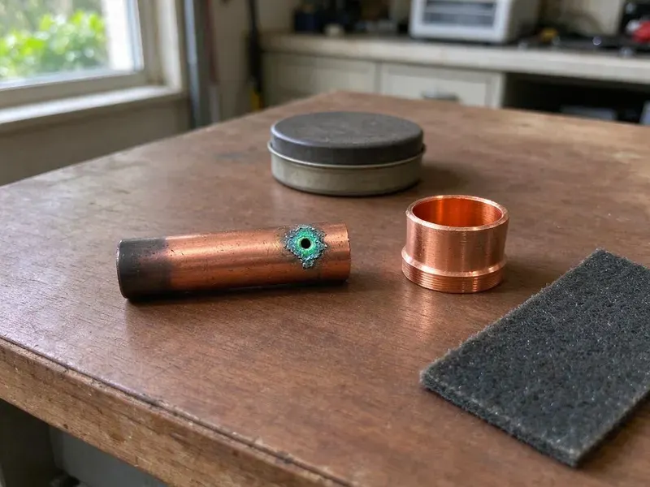

Underground Pipe Repair in Livonia, MI
From the meter to the house and from the house to the street, CHV Plumbing fixes underground lines across Livonia, MI.
- PEX or Type K Copper
- Licensed & Insured
- 811 Called Before Every Dig
- Trenchless Replacement Options
Find and Fix the Hidden Pipe Leak Under Your Yard in Livonia, MI
Every repaired line gets a pressure test before the trench is closed.
Underground Pipe Repair That Starts With Leak Detection in Livonia, MI
CHV Plumbing repairs buried water and sewer pipe in Livonia, MI, from a pinhole in a copper service to a cracked clay lateral. Basements are the norm, so sump pumps, drain tile and perimeter drains are a big part of residential plumbing. Ground movement stresses joints. Most underground leaks start at a fitting, a sharp bend or a spot where the pipe rests on a rock, and our locating gear narrows the search to a few feet before anyone picks up a shovel. The hole stays small.
Some of what we do:
- Root and settlement damage correction
- Trenchless pull-through and bursting replacement
- Acoustic and tracer gas leak locating on buried lines

Additional Plumbing Repair Services in Livonia, MI
We offer expert plumbing repair services across Livonia, MI to fix leaks, restore flow, and keep your system running smoothly.


Customers
Why Choose CHV Plumbing for Underground Pipe Repair in Livonia, MI?
A bad underground repair can wreck a foundation or contaminate drinking water. Shortcuts cost more later. Our crews use fittings listed for direct burial, bed the pipe in sand or fine fill, and set it at the depth the local code requires so frost and traffic do not crack it later. We test before backfill.
- Warranty, Workmanship is warrantied in writing, on top of the pipe maker's warranty.
- Written Quotes, Footage, method and price are written up first.
- Clean Sites, Plywood under equipment, spoils on tarps and the hole compacted, not mounded.
Citywide Coverage
Residential lots, duplexes and small commercial sites across Livonia all have buried lines that fail. Layouts vary a lot. We trace the pipe route with a locator before digging, which keeps the excavation exactly where it needs to be.
Experienced Team
Our crew is trained in leak detection and utility locating, not just pipe repair. That is the hard part. A tech who has listened to hundreds of buried lines can tell a leak from a running toilet or an irrigation valve on the acoustic gear, which keeps the dig in the right spot the first time.
Safety-First Approach
Trenches deeper than five feet get shoring or a trench box, as federal rules require. Walls collapse fast. Our crew sets the protection before anyone climbs in, keeping dirt away from the edge so the trench holds.
Trusted Certified Livonia Plumbing Services Professionals
At CHV Plumbing, we take pride in licensed, certified plumbing services throughout Livonia, MI. Those papers on the wall mean something. Every repair, install and maintenance visit follows strict safety and quality rules, and the plumbers doing the work carry recognized industry credentials.
Call Us Now PHCC Plumbing Contractor Recognition
PHCC Plumbing Contractor Recognition Better Business Bureau (BBB) Accreditation
Better Business Bureau (BBB) Accreditation Angi Certified Pro
Angi Certified Pro ISO 9001 Quality Management Certification
ISO 9001 Quality Management CertificationUnderground Pipe Repair Options for Livonia, MI Properties
Foundation Leak Detection and Repair in Livonia, MI
A leak under a slab often shows up as a warm spot on the floor. Or a hissing sound. We isolate hot and cold lines with pressure tests and locate the leak with acoustic gear and thermal imaging, then repair it through a small slab cut or reroute the line overhead so the floor stays intact. We explain the tradeoffs.

Emergency Underground Pipe Services in Livonia
Water bubbling up through the lawn means pressure is escaping somewhere. That is an emergency. Our after-hours crew locates the break, digs it out and makes a permanent repair on the spot when the pipe and fittings allow, which is most of the time. Shut the meter valve first.
Underground Sewer Line Repair in Livonia
Buried sewer damage shows up as odor, slow drains or a soggy patch over the line. Video shows the break. We run a camera with a sonde through the lateral, mark the break on the surface and choose between a spot repair, lining or replacement based on the video. Trenchless methods often save Livonia driveways. We tell you if yours qualifies.
Underground Leak Detection & Repair in Livonia, MI
Finding a buried leak takes the right tools. Digging blind costs money. We combine ground microphones, tracer gas and electronic pipe locating in Livonia, MI, and the result is a mark on the surface within a few feet of the actual break. The repair follows the mark.
Trenchless Pipe Repair in Livonia
Trenchless repair replaces or relines buried pipe without opening its full length. One or two holes, not a trench. We can pull new PEX or HDPE through the old pipe path or line a sewer lateral with resin, which leaves driveways, patios and mature landscaping in place. Not every pipe qualifies. The route and condition decide it.
Underground Water Line Repair in Livonia, MI
A leaking water service runs at full street pressure around the clock. Bills climb fast. Low pressure, a wet spot that never dries and a meter that turns with everything off are the usual clues, so we verify it with a pressure test and then pinpoint it acoustically. Repairs use approved fittings.
Main Water Line Repair in Livonia
Your main water line runs from the meter box to the house under constant pressure. Small leaks grow. A spinning meter dial with every fixture off, falling pressure or a wet spot that never dries tell us to locate, dig and splice the line with code-approved fittings. Old galvanized usually gets replaced.

Storm Drain and Lateral Repair in Livonia, MI
Storm laterals carry roof and yard water away from the foundation. Broken ones leave puddles. We jet the line, camera it for crushed or separated sections and repair broken runs so runoff gets carried off instead of sitting next to the house. The outlet gets cleared too.
Underground Pipe Repair Near Me in Livonia, MI
Our Livonia crew knows how deep service lines usually run around here and which neighborhoods still have galvanized or polybutylene. That shortens the job. It also means fewer surprises when the hole is open, since we already expect the fittings and transition parts the old pipe will need.
Most underground repairs in Livonia are scheduled within a day or two of locating. Active leaks go first. Phone (810) 380-5918 with what you are seeing, and we will walk you through shutting off the water until the crew arrives.
CHV Plumbing at a Glance
- Fully licensed plumbing team covering Livonia, MI
- 24/7 emergency service with same-day scheduling
- Clear written estimates, no hidden fees
- 4.9-star rated by 670+ Michigan customers
Livonia Map
Livonia Information
- Population
- 92,185
- Area codes
- 734/248/313
- Service area
- Livonia and towns within a 40 mile drive
- Nearby
- Westland, Dearborn Heights, Farmington Hills, Southfield
Buried pipe in Livonia, MI takes stress from shifting ground, and old joints and thin-wall pipe are the first to leak. Basements are the norm, so sump pumps, drain tile and foundation drainage are a big part of residential plumbing.
Expert Services
Reach out to CHV Plumbing for honest, reliable plumbing from people who know the trade in Livonia, MI.
Our Specialized Plumbing Services in Livonia, MI
At CHV Plumbing, we handle the full list of plumbing services across Livonia, MI. From leak detection to full system installs, our team works fast and charges fair prices on homes and commercial properties alike. Take a look at our core services below:


How Our Underground Pipe Repair Process Works in Livonia, MI
No digging until you have a written price.
Tell Us What You See
Call (810) 380-5918 and describe the wet yard, high bill or low pressure. We will get someone out quickly.
Locate the Leak
We pinpoint the damaged section with acoustic, electronic and camera equipment, then give you a written quote.
Repair and Restore
We excavate, repair the pipe and pressure test the line. Then we backfill and clean up.
Frequently Asked Questions About Underground Pipe Repair in Livonia
Simple buried pipe repairs usually run $500 to $2,500. Big jobs climb higher. Extensive trenchless sewer replacements can be $5,000 to $15,000 or more, with location, damage and method driving the total. The price comes after we look.
It gets worse and more expensive. Water erodes the ground. A leaking service can undermine a driveway, soak a foundation, grow mold in a crawlspace and run up the water bill every month, while a broken sewer line leaks waste into the yard. Early repair costs less.
Shallow irrigation leaks are sometimes a fair DIY job. Main lines are not. Main water lines and sewer laterals require locating, utility marks and code-compliant fittings rated for burial, so those should go to a licensed plumber. Any dig needs 811 first.
It is pipe repair or replacement through small access pits. We do it regularly. Pipe bursting and cured-in-place lining are the two main methods we use for Livonia homeowners, and both leave most of the yard, driveway and landscaping undisturbed compared to an open trench. We check yours first.
Small repairs often do not. Replacements usually do. Full water service or sewer line replacement usually requires a permit, and any work in the public right-of-way always needs coordination with the city. We handle it when required.
Every repair is warrantied. We write the warranty down. Our workmanship warranty covers the repair, and the pipe and fittings carry their own manufacturer warranties on top of it. We explain it before we start.
Many utilities offer a one-time leak adjustment. Ask them about it. Most want proof that the leak was repaired promptly, so we hand you paperwork showing what was fixed and when. Rules differ by provider.
Less digging is the big one. Your lawn survives. Trenchless methods leave driveways, patios and established landscaping alone, and the savings on putting the yard back often cover the higher method price. It is often faster.
Hear From Customers Who Hired Our Plumbing Experts

Carlos V.
Our house still had galvanized pipe, and upstairs the shower was a trickle. The crew repiped everything in PEX over three days and patched every drywall hole before they left. The pressure difference is night and day.
Repiping · Dearborn Heights, MI
Monica A.
Our water bill nearly doubled in one month with no change in how we used water. The tech checked the meter, heard the leak under the hallway with his equipment, and opened a hole about a foot square. Fixed the same day.
Slab Leak Repair · Dearborn Heights, MI
Paul B.
Our pit pump ran nonstop even in dry weather. The plumber found the check valve was stuck open, so the same water kept cycling back into the pit. New valve, new float switch, done in an hour. It runs quiet now.
Sump Pump · Dearborn, MI
Kevin O.
Before buying our house I paid for a sewer camera inspection. CHV Plumbing found a belly in the line that held standing water about forty feet from the cleanout. We used the video to get the sellers to fix it before closing.
Sewer Camera Inspection · Dearborn Heights, MI
Patricia H.
We had a slab leak that two other companies could not find. CHV Plumbing located it in under an hour with a listening device. They rerouted the line through the attic instead of breaking up the floor, so we kept our kitchen tile.
Slab Leak Repair · Dearborn, MIDaniel K.
A pipe burst in the garage ceiling at 11 at night. Someone answered on the second ring, and the plumber was in my driveway about fifty minutes later. He shut off the main, cut out the split section, and had water back on before 2 am.
Emergency Plumbing · Livonia, MI